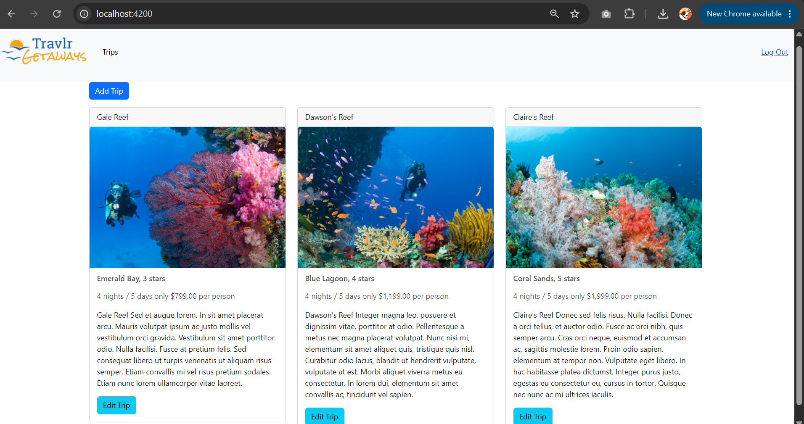
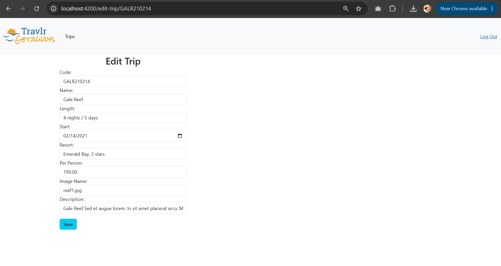

Milestone narrative, submitted as graded coursework.
Download the Word original: CS499_Milestone_Two_Narrative.docx
Milestone Two Narrative: Enhancement One, Software Design and Engineering
Artifact Description
The artifact for this enhancement is Travlr Getaways, the full stack travel booking application I built in CS 465: Full Stack Development I earlier in the Computer Science program. The application follows the MEAN stack architecture: a MongoDB database accessed through Mongoose, an Express and Node.js backend that exposes a RESTful API, a server-rendered Handlebars site for customers, and a single-page administration application originally written in Angular. The admin SPA allows authenticated administrators to list, add, and edit trip packages, with authentication handled through JSON Web Tokens issued by the Express API.
Justification and Improvements
I selected this artifact because it is the most complete full stack system I built in the program, which makes it the strongest possible canvas for demonstrating software design and engineering skill. A migration between frontend frameworks is also a genuinely representative industry task: it cannot be completed by pattern matching on syntax, because it requires understanding what each piece of the original architecture is responsible for and then choosing the idiomatic equivalent in the target ecosystem. That architectural mapping is exactly what this enhancement showcases.
The enhancement replaced the Angular admin SPA with a new React 18 application written entirely in TypeScript and built with Vite, while preserving every original feature against the same Express API. Each Angular construct was deliberately mapped to a React counterpart: the injectable TripDataService that returned RxJS Observables became a typed, Promise-based API layer consumed with async and await; the JwtInterceptor class registered through the HTTP_INTERCEPTORS provider became request and response interceptors on a centralized Axios instance, with the response interceptor adding 401 handling the original never had; the root-provided AuthenticationService became a React Context with a useAuth hook; and component state moved from Angular signals and lifecycle methods to useState and useEffect hooks (Meta Open Source, n.d.; Axios, n.d.).
The migration also corrected several design weaknesses found in my Milestone One code review. The add-trip and edit-trip components previously duplicated an identical nine-field reactive form across roughly 240 lines; both pages now render a single shared TripForm component whose validation is driven by field metadata. The edit workflow previously passed the selected trip code between components by stashing it in localStorage, which made edit pages impossible to bookmark or refresh; the code now travels in the URL as a route parameter, as shown in Figure 2. The login component previously polled with a three-second timer because the authentication service saved the token outside the component, a race condition that disappears entirely now that login resolves as a Promise. The original template also bound trip descriptions with innerHTML, a stored cross-site scripting vector that React closes by escaping rendered text, and I wrote a regression test that proves a script payload renders as inert text. Escaping also surfaced legacy HTML markup embedded in the seed data, which was cleaned so that content and presentation are properly separated. On the backend, I centralized Express error handling into dedicated middleware, wrapped every controller in an asyncHandler so rejected promises reach that middleware instead of crashing the process, fixed the undefined error variable referenced in every failure branch of the trips controller, repaired the JWT middleware so it no longer calls next() after rejecting an invalid token, and protected the previously unauthenticated DELETE route. End-to-end integration testing of the migrated frontend against the live API also exposed and fixed a latent defect in the original backend, which never answered CORS preflight OPTIONS requests. The enhancement is verified by a sixteen-test Jest and React Testing Library suite covering token handling, component rendering, and form validation, and the TypeScript compiler passes in strict mode. Figure 1 shows the completed React application running against the live Express API in an authenticated session.
Figure 1
The React admin SPA displaying trips from the live Express API in an authenticated session.

Figure 2
The edit view with the trip code carried as a URL route parameter and the form populated from the API.

Course Outcome Progress
This enhancement meets the outcomes I planned for it in Module One. It demonstrates Course Outcome 4, the use of well-founded and innovative techniques, skills, and tools in computing practice, through the disciplined adoption of an industry-standard toolchain: React with hooks, strict TypeScript, Axios interceptors, Vite, and automated testing. It also supports Course Outcome 1, building collaborative environments, because the artifact is structured for other developers: the repository now includes a README with a table that maps every Angular construct to its React replacement, the shared form component documents why the duplication was removed, and the typed interfaces make the data contract explicit for anyone who joins the codebase. One update to my coverage plan is worth noting: fixing the unauthenticated DELETE route and the JWT middleware defects during this enhancement gives me early progress toward Course Outcome 5, the security mindset, which I had scheduled primarily for Enhancement Three. My overall outcome-coverage plan is otherwise unchanged.
Reflection
The most valuable learning in this enhancement came from translating intent rather than syntax. Angular and React answer the same questions, such as where shared state lives, how cross-cutting concerns like authentication headers are applied, and how a component reacts to data arriving, with very different mechanisms, and the migration forced me to articulate what each Angular pattern was actually for before I could choose its React equivalent. Replacing a dependency injection container with module boundaries and a Context provider, for example, only works cleanly once the responsibility of each injected service is understood in isolation.
The biggest challenge was resisting the temptation to transliterate. My first instinct was to reproduce the Angular structure file by file, which would have carried its defects forward, including the duplicated forms and the localStorage coupling between components. Slowing down to redesign those seams produced a smaller and more testable application than the original. A second challenge was asynchronous state: React will warn about state updates on unmounted components, which forced me to add cleanup guards to every data-loading effect and, in the process, gave me a much more concrete understanding of the component lifecycle than the Angular subscription model ever demanded. Writing the Jest suite last confirmed a lesson from my code review research in Module Two: the components that were hardest to test were exactly the ones whose design I had not yet cleaned up, and testability turned out to be the most honest measure of the design itself.
References
Axios. (n.d.). Interceptors. Axios Documentation. https://axios-http.com/docs/interceptors
Meta Open Source. (n.d.). Passing data deeply with context. React Documentation. https://react.dev/learn/passing-data-deeply-with-context